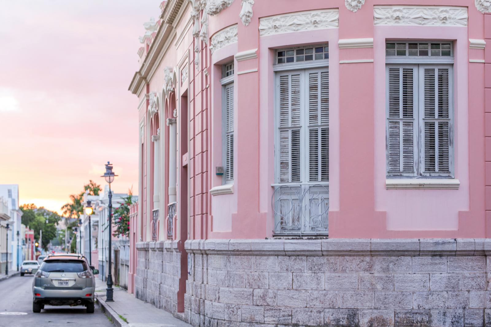

| South & East Region | ||
|  | Fun Fact: Ponce was founded in 1692 by Juan Ponce de León's great-grandson - Loíza Ponce de León. Ponce de Leon was one of Puerto Rico's early colonizers. Ponce is also known as the Ciudad Señorial(Majestic or Noble City), because of its many beautiful neoclassical buildings and facades. He supposedly settled in this region as it was rumored that the fountain of youth was the natural hot springs of Coamo. |
|
| This photo is the corner of the building of the old musuem of art of Ponce. | ||
| The south and east region of the island offer many unique cultural experiences such as the famous Ponce’s Art Museum, the Yaucono Coffee Factory and the Yacromatic2 Village. These key locations are cultural gems of Puerto Rico, resembling what the island was built on and the creativity that inhabitants have. This region is also home to the famous island Caja de Muertos or the Island of Coffins (Literal translation). It got its name because from a far the island resembles a dead man laying down on the ocean surface as if it were in a coffin. The region is also home to one of the three bioluminescent bays on the island located next to la parguera in a nature reserve. It is also home to the only natural hot springs on the island which are located in Coamo. It is also home to two of the most famous seafood restaurants on the island, El Ancla in Ponce and El Roble in Salinas, both which receive their fish in the morning from local fishermen. | ||